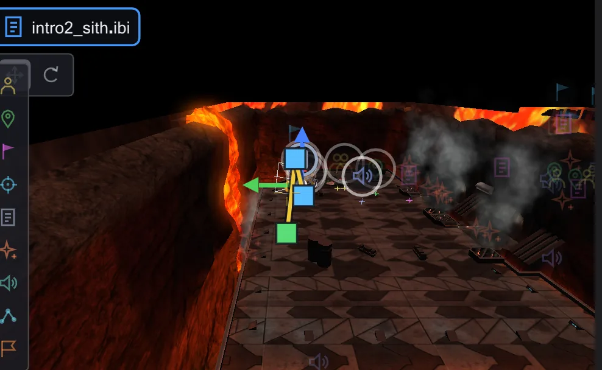

エンティティ
スクリプトが扱えるマップ内のもの(キャラクター、歩行目標、カメラマーク、トリガー、船)はすべてエンティティです。選択・変更・移動し、新しく配置できます。

エンティティ一覧#
左の列はエンティティをグループに分けます。カメラマーク、歩行目標、視線目標、キャラクター、スクリプトランナー、エフェクト、サウンド、可動物、破壊可能物、NPC ウェイポイント。目のアイコンでビューから隠し(Alt+クリックでそのグループだけ表示)、検索欄で名前やクラスを絞り込みます。クリックで選択、ダブルクリックでそこへ移動、右クリックでそれ向けのコマンド(歩行目標、視線目標、affect ブロック、カメラをこのマークへ)を挿入します。
ビューで選択#
マーカー、キャラクター、モデルをクリックして選択。Ctrl/Shift+クリックで追加、何もない所をドラッグした枠で中のものをすべて選択します。マウスを乗せると枠と名前が表示されます。マップ下のバーには、選択中のエンティティがスクリプトで何回使われているかと、その行へ移動するボタンが表示されます。
移動と回転#
ビューの隅の小さなバーでギズモを 移動 と 回転 に切り替えます。移動では床の上をドラッグするか、色付きの矢印に沿ってドラッグします。ツールバーで設定したグリッドにスナップし、ドラッグ中に Ctrl を押すと解除されます。グリッドがないときは Ctrl で矢印のドラッグが 8 ユニットにスナップします。回転ではリングが表示されます(Ctrl:15 度刻み)。青は左右の回転、船とモデルには緑(ピッチ)と赤(ロール)もあります。キャラクターは青だけです。ゲームはキャラクターに angle しか使わないからです。Alt+ドラッグで先にコピーします。複数選択したエンティティはまとめて動き、回転します。



インスペクター#
一覧の下のインスペクターは選択中のエンティティを表示します。ゲームコード由来の説明付きのクラス、名前、位置、床(足が床からどれだけ上にあるか。めり込むと赤)、向き (度)、チェックボックスのスポーンフラグ、その他すべてのキーの欄。スクリプト欄には 開く、NPC_type にはゲームの全 NPC の検索があります。アイコンバーでそこへ移動、床に置く、複製、削除、アニメーション(可動物のアニメーションと ROFF ファイル)、すべてのキー (生) を使えます。マウスがマップか一覧の上にある間、エンティティの変更は専用の元に戻す履歴を使います。
新しいエンティティの配置#
ビュー左端のタイルでよく使う種類を配置します。キャラクター、歩行目標、カメラ/視線マーク、視線目標、スクリプトランナー、エフェクト、サウンド、NPC ウェイポイント、プレイヤースタート。タイルをクリックしてからビューをクリックするか、タイルをビューへドラッグします。Shift で連続配置。一覧の上の + エンティティ とビューの右クリック(ここに新規エンティティ)ではすべてのクラスを選べます。グリッドボタンで 8・16・32・64 ユニットにスナップします。